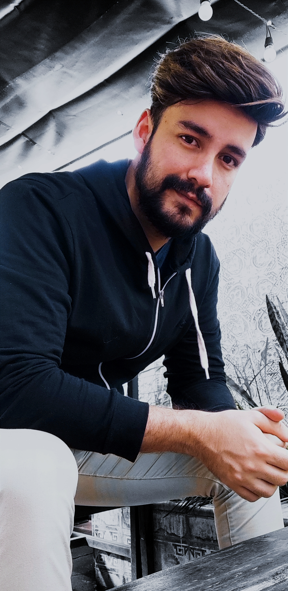

Curriculum vitae de Franco Ezequiel Aban
datos personales
- Nombre Completo: Franco Ezequiel Aban
- Fecha de nacimiento: 18/08/1993
- Lugar de nacimiento: Tucumán
Formacion academica
- 1999 - 2011:Escuela Primaria Normal Gral José de San Martin
- Escuela Secundaria Normal Superior Gral José de San Martin
- 2012 - Actualidad: UNT - Lic. en Biotecnología.
- 2021 - Actualidad: Certified Tech Developer - Digital House.
experiencia laboral
- 2015 - 2021: AIESEC - Miembro Voluntario
- ENERO 2016: Voluntario Internacional en Valparaiso, Chile - AIESEC
- 2019 - Actualidad: Adminitrador - MONDIEU Coworking
TELEFONO - 3814026512